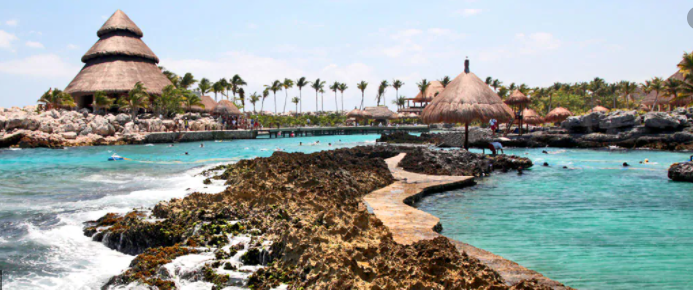

France
What a place, the history, architecture and culture is wonderful. So many sites to see, one more amazing then the next. You can find the best museums in the world, sail the Sena, visit Notre Dame, Montmatre, well is just amazing.
England
Big Ben, the Tower of London, Buckingham Palace, the London Eye, the list goes on and on. There’s nothing quite like the experience of hopping on a red double-decker bus and seeing some of the most recognisable sights in the world from its top deck.
Canada
British Columbia is a diverse province that really does has something for everyone. Remote islands, award-winning wine regions, amazing cities, outdoor adventures, and world-class ski resorts are all on offer in British Columbia.
Australia
Breathtaking natural landscape, vibrant cities, unlimited road trips and friendly locals are only some of the reasons why you should travel to Australia. Australia is well known as the land of the sun, surf, and unique outback. ... Road tripping Australia is the best way to see the country.
Mexico
With fabulous beaches, ancient ruins, alluring culture, dynamic cities brimming with colonial architecture, and feisty mouthwatering cuisine, Mexico truly is a tropical treasure trove.
Jamaica
Montego Bay has excellent duty-free shopping, vibrant nightlife, and calm waters. Browse the local handicrafts at the open-air Harbour Street market, or the "hip strip" shops of Gloucester Avenue. The underwater crevices of Widowmaker’s Cave offer an intricate diving experience. Float serenely down the Martha Brae River on a bamboo raft and let your troubles melt away under the sun.